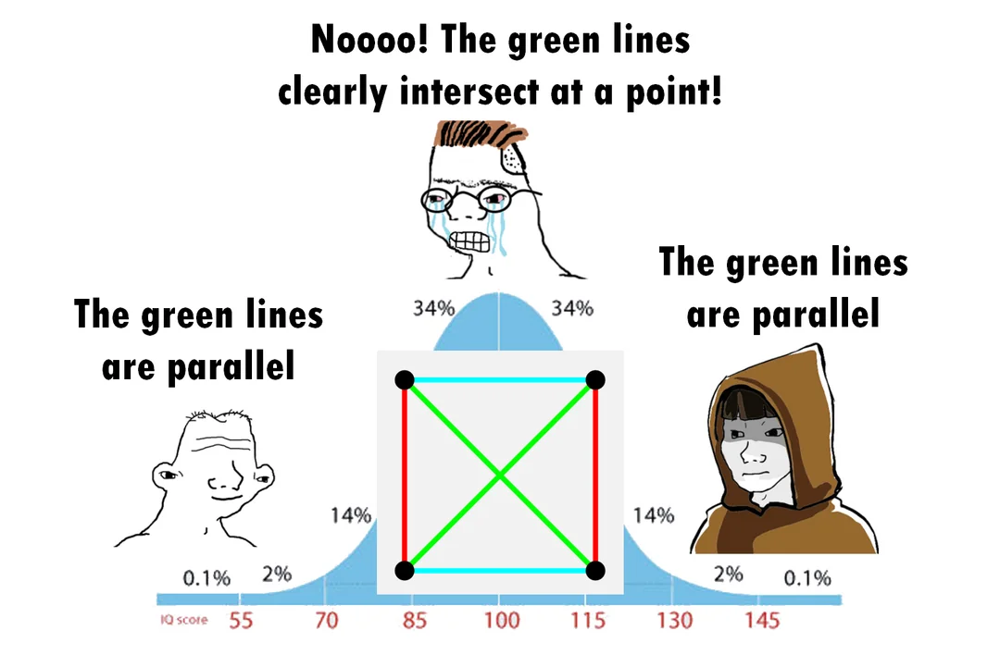
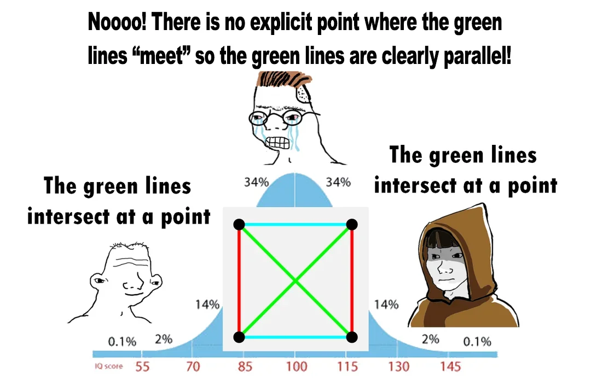
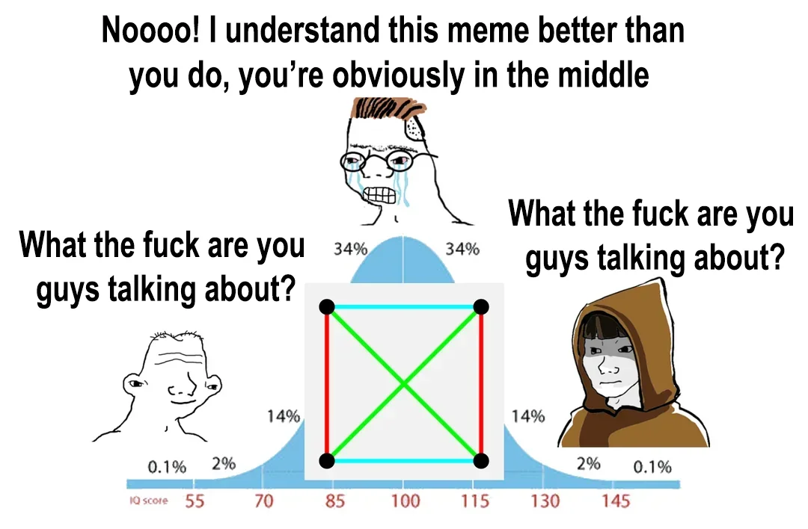

The Axiomatics of Parallelism: Finite Geometries, the 4-Point Affine Plane, and Diagrammatic Fallacies
Deconstructing the Midwit Geometry Meme: How \(AG(2, \mathbb{F}_2)\), the Fano Plane, and Model Theory Resolve Whether Crossing Lines are Parallel
1 1. Introduction: The Meme That Divided the Mathematical Internet
In internet mathematical culture, few images have generated more fierce debate, cognitive dissonance, and pedantic flame wars than the Midwit Geometry Bell Curve:

The diagram depicts a square with four black vertices: * Two horizontal cyan lines connecting the top and bottom pairs of vertices. * Two vertical red lines connecting the left and right pairs of vertices. * Two diagonal green lines crossing across the center.
The three characters on the bell curve react as follows: * The Low-IQ Observer (IQ 55): “The green lines are parallel.” * The Midwit (IQ 100): “Noooo! The green lines clearly intersect at a point!” * The Grandmaster (IQ 145): “The green lines are parallel.”
Almost immediately, variants appeared online. A second variant inverted the punchline:

And finally, a third meta-meme emerged expressing sheer exasperation at the entire discourse:

Is this merely an absurd internet joke? Or is it an extraordinarily deep gateway into synthetic incidence geometry, finite fields, projective geometry, and model theory?
As we will prove rigorously from first principles, this meme captures one of the most fundamental shifts in the history of mathematics: the decoupling of geometry from visual pictures.
2 2. The Classical Foundations: Euclid’s Five Postulates and the Interior Angle Criterion
Before we examine finite incidence geometry or David Hilbert’s formalization, we must examine where the concept of “parallelism” was born: Book I of Euclid of Alexandria’s Elements (c. 300 BCE).
2.1 2.1 Euclid’s Five Postulates and Five Common Notions
Euclid constructed the foundations of planar geometry upon five explicit geometrical postulates and five general logical axioms (“common notions”).
2.1.1 The Five Postulates
- Postulate 1: To draw a straight line from any point to any point.
- Postulate 2: To produce a finite straight line continuously in a straight line.
- Postulate 3: To describe a circle with any center and distance (radius).
- Postulate 4: That all right angles are equal to one another.
- Postulate 5 (The Parallel Postulate):
That, if a straight line falling on two straight lines make the interior angles on the same side less than two right angles, the two straight lines, if produced indefinitely, meet on that side on which are the angles less than the two right angles.
2.1.2 The Five Common Notions (Axioms)
- Things which are equal to the same thing are also equal to one another (\(a = c \wedge b = c \implies a = b\)).
- If equals be added to equals, the wholes are equal (\(a = b \implies a + c = b + c\)).
- If equals be subtracted from equals, the remainders are equal (\(a = b \implies a - c = b - c\)).
- Things which coincide with one another are equal to one another (the axiom of geometric congruence by superposition).
- The whole is greater than the part.
2.2 2.2 The Anatomy of Postulate 5: The Transversal and Interior Angles
Euclid’s Fifth Postulate is noticeably longer, more elaborate, and fundamentally more conditional than the first four postulates. It is not an assertion about parallel lines per se; it is a criterion for the guaranteed intersection of two lines cut by a transversal.
Transversal t
\
\
Line ℓ₁ ----------\-----------
\ α
\
\ β
Line ℓ₂ --------------\-------
\
\ Intersection Point P
\ (if α + β < 180°)
↘Formally: * Let \(\ell_1\) and \(\ell_2\) be two coplanar straight lines. * Let a third line \(t\) (the transversal) intersect \(\ell_1\) at point \(A\) and \(\ell_2\) at point \(B\). * On one designated side of \(t\), the transversal creates two consecutive interior angles (often denoted \(\alpha = \angle 1\) and \(\beta = \angle 2\)). * The Criterion: \[\alpha + \beta < 2 \text{ right angles } (180^\circ \text{ or } \pi \text{ radians}) \implies \ell_1 \text{ and } \ell_2 \text{ must intersect on that side of } t.\]
2.2.1 The Tripartite Classification of Interior Angles
Given two lines cut by a transversal with consecutive interior angles \(\alpha\) and \(\beta\) on one side:
| Sum of Interior Angles (\(\alpha + \beta\)) | Geometric Consequence for Lines \(\ell_1, \ell_2\) |
|---|---|
| \(\alpha + \beta < 180^\circ\) | Intersect on this side: The lines must converge and meet at a unique point \(P\) on the side of the transversal where the angle sum is deficient (Euclid Postulate 5). |
| \(\alpha + \beta = 180^\circ\) | Strictly Parallel: The lines never meet in either direction: \(\ell_1 \cap \ell_2 = \emptyset\) (Euclid Book I, Proposition 28). |
| \(\alpha + \beta > 180^\circ\) | Intersect on the opposite side: Since the total angle sum on both sides of transversal \(t\) is \(360^\circ\), the interior angles on the other side sum to \(360^\circ - (\alpha + \beta) < 180^\circ\), forcing intersection on the opposite side. |
2.2.2 Euclid’s Definition of Parallel Lines (Definition 23)
In Book I, Definition 23, Euclid explicitly defines parallel lines without mentioning distance or angle: > “Parallel straight lines are straight lines which, being in the same plane and being produced indefinitely in both directions, do not meet one another in either direction.”
In modern set-theoretic notation, for coplanar lines \(\ell_1, \ell_2\): \[\ell_1 \parallel \ell_2 \iff \ell_1 \cap \ell_2 = \emptyset \quad \text{or} \quad \ell_1 = \ell_2\]
2.2.3 The 28-Proposition Hesitation: Absolute (Neutral) Geometry
One of the most remarkable intellectual feats of the Elements is Euclid’s reluctance to use Postulate 5. * Propositions 1 through 28 are proved without ever invoking the Fifth Postulate. This body of theorems is known today as Absolute (or Neutral) Geometry (\(\mathbf{AG}\)). * In Proposition 27, Euclid proves: If a straight line falling on two straight lines makes the alternate interior angles equal to one another, the straight lines shall be parallel to one another. (Proved purely using the Exterior Angle Theorem, Prop 16, without Postulate 5!). * In Proposition 28, Euclid proves: If a transversal makes the interior angles on the same side equal to two right angles (\(\alpha + \beta = 180^\circ\)), the straight lines are parallel. * Only at Proposition 29—the converse of 27 and 28—does Euclid finally find it unavoidable to introduce Postulate 5 to prove that if two lines are parallel, their alternate interior angles must be equal and their consecutive interior angles must sum to \(180^\circ\).
2.3 2.3 The 2,000-Year Quest and Equivalent Formulations
Because Postulate 5 was so verbose and lacked the visceral self-evidence of Postulates 1–4, mathematicians spent two millennia attempting to prove that Postulate 5 was redundant—a theorem that could be deduced from Postulates 1–4 and the Common Notions alone.
Every attempt failed, but each attempt produced a logically equivalent formulation:
- Playfair’s Axiom (John Playfair, 1795):
In a plane, given a line \(\ell\) and a point \(P\) not on \(\ell\), at most one line can be drawn through \(P\) parallel to \(\ell\).
(Under Neutral Geometry, this is strictly equivalent to Euclid’s Postulate 5). - The Triangle Angle Sum Theorem:
The sum of the interior angles of any triangle is equal to two right angles (\(\sum_{i=1}^3 \theta_i = 180^\circ\)). - Wallis’s Postulate (John Wallis, 1663):
To each triangle, there exists a similar triangle of arbitrary size. (Scale invariance: space has no intrinsic metric ruler). - Clairaut’s Axiom (Alexis Clairaut, 1741):
There exists at least one rectangle (a quadrilateral with four right angles). - Saccheri’s Hypothesis of the Right Angle (Giovanni Girolamo Saccheri, 1733):
In a Saccheri quadrilateral (a quadrilateral with equal perpendicular legs to a base), the two summit angles are right angles. - Proclus’s Axiom (c. 450 CE):
If a line intersects one of two parallel lines, it must also intersect the other. - Equidistance of Parallel Lines:
Two parallel lines remain at a constant perpendicular distance from one another.
2.3.1 The Non-Euclidean Revolution
In the 1820s and 1830s, Carl Friedrich Gauss, Nikolai Lobachevsky, and János Bolyai discovered that Postulate 5 is independent of Postulates 1–4. Negating it produces entirely consistent, rich geometries: * Hyperbolic Geometry (Lobachevskian): Through a point \(P \notin \ell\), there exist infinitely many lines parallel to \(\ell\). Triangle angle sums satisfy \(\sum \theta < 180^\circ\). * Elliptic Geometry (Riemannian): Zero parallel lines exist; every two lines intersect. Triangle angle sums satisfy \(\sum \theta > 180^\circ\).
2.4 2.4 Hilbert’s Cleansing of Intuition and Incidence Geometry
By the late 19th century, David Hilbert recognized that Euclid’s geometry was riddled with unspoken intuitive assumptions (such as the continuity of circles and the concept of “betweenness”). In his 1899 Grundlagen der Geometrie, Hilbert stripped geometry down to its purely symbolic, axiomatic bones: > “One must be able to say at all times—instead of points, straight lines, and planes—tables, chairs, and beer mugs.”
In modern synthetic geometry, we drop all metric concepts (angles, degrees, protractors, distances) and retain only Incidence: whether an abstract point lies on an abstract line. Euclid’s Fifth Postulate, stripped of its angles and transversals, survives purely as Playfair’s Parallel Axiom.
In modern mathematics, a geometry does not start with continuous space \(\mathbb{R}^2\), rulers, or pencils. A geometry is formally defined as an abstract Incidence Structure:
Definition 1 (Definition: Incidence Structure) An incidence structure is a triple \(\mathcal{S} = (\mathcal{P}, \mathcal{L}, \mathcal{I})\), where: 1. \(\mathcal{P}\) is a non-empty set whose elements are called points. 2. \(\mathcal{L}\) is a non-empty set whose elements are called lines. 3. \(\mathcal{I} \subseteq \mathcal{P} \times \mathcal{L}\) is a binary relation called the incidence relation.
If \((P, \ell) \in \mathcal{I}\), we say “the point \(P\) lies on the line \(\ell\)” or “the line \(\ell\) passes through the point \(P\)”.
Notice what is missing from this definition: * There is no notion of distance (metric). * There is no notion of angle, degrees, or perpendicularity. * There is no notion of “betweenness” or continuity. * There is no assumption that a line contains infinitely many points.
2.5 2.5 The Axioms of an Affine Plane
When is an arbitrary incidence structure \((\mathcal{P}, \mathcal{L}, \mathcal{I})\) entitled to be called an affine plane? It must satisfy three non-negotiable axioms:
Definition 2 (Axioms of an Affine Plane) An incidence structure \(\mathcal{A} = (\mathcal{P}, \mathcal{L}, \mathcal{I})\) is an affine plane if:
Axiom A1 (Line Existence & Uniqueness):
Given any two distinct points \(P, Q \in \mathcal{P}\) (\(P \neq Q\)), there exists exactly one line \(\ell \in \mathcal{L}\) such that \((P, \ell) \in \mathcal{I}\) and \((Q, \ell) \in \mathcal{I}\). We denote this line by \(P Q\).Axiom A2 (Playfair’s Parallel Postulate):
Two lines \(\ell, m \in \mathcal{L}\) are defined to be parallel (denoted \(\ell \parallel m\)) if and only if they are identical or share no points: \[\ell \parallel m \iff \ell = m \quad \text{or} \quad \{P \in \mathcal{P} : P \in \ell \text{ and } P \in m\} = \emptyset\] Axiom: For every line \(\ell \in \mathcal{L}\) and every point \(P \in \mathcal{P}\) not on \(\ell\), there exists strictly one line \(m \in \mathcal{L}\) passing through \(P\) such that \(m \parallel \ell\).Axiom A3 (Non-Degeneracy):
There exist at least four points in \(\mathcal{P}\), no three of which are collinear (i.e., no single line contains three of them).
If an incidence structure satisfies Axioms A1, A2, and A3, it is a mathematically valid affine plane—regardless of whether it contains infinitely many points (like \(\mathbb{R}^2\)) or a finite handful of discrete tokens!
3 3. The 4-Point Affine Plane \(AG(2, \mathbb{F}_2)\): The Minimal Geometry
Now let us construct the exact mathematical universe depicted in the meme: the finite affine plane over the Galois field of two elements, denoted \(AG(2, \mathbb{F}_2)\) or \(AG(2, 2)\).
3.1 3.1 The Galois Field \(\mathbb{F}_2\)
The smallest possible field is \(\mathbb{F}_2 = \{0, 1\}\), where addition is modulo 2 (exclusive OR, \(\oplus\)) and multiplication is standard integer multiplication (logical AND, \(\wedge\)):
\[\begin{array}{c|cc} + & 0 & 1 \\ \hline 0 & 0 & 1 \\ 1 & 1 & 0 \end{array} \qquad \begin{array}{c|cc} \times & 0 & 1 \\ \hline 0 & 0 & 0 \\ 1 & 0 & 1 \end{array}\]
Notice the fundamental characteristic of \(\mathbb{F}_2\): \(1 + 1 = 0\), which means \(-1 = +1\). Moreover, the element \(2 = 0\), which means division by \(2\) is division by zero! The fraction \(\frac{1}{2}\) does not exist in \(\mathbb{F}_2\).
3.2 3.2 The Point Set \(\mathcal{P}\)
The affine plane \(AG(2, \mathbb{F}_2)\) is the 2-dimensional vector space \(V = \mathbb{F}_2^2\). Its points are ordered pairs \((x, y)\) where \(x, y \in \{0, 1\}\): \[\mathcal{P} = \Big\{ (0,0), \; (1,0), \; (0,1), \; (1,1) \Big\}\] There are exactly 4 points in the entire universe! In the meme diagram, these are the four black corner vertices: * \(P_1 = (0,0)\) (Bottom-Left) * \(P_2 = (1,0)\) (Bottom-Right) * \(P_3 = (0,1)\) (Top-Left) * \(P_4 = (1,1)\) (Top-Right)
3.3 3.3 What is a Line in \(AG(2, \mathbb{F}_2)\)?
In analytic linear algebra, a line in an affine space over a field \(\mathbb{F}\) is an affine 1-dimensional subspace—that is, a coset of a 1-dimensional vector subspace: \[\ell = \vec{x}_0 + \operatorname{span}\{\vec{v}\}, \quad \vec{v} \neq \mathbf{0}\] Since the scalar field is \(\mathbb{F}_2 = \{0, 1\}\), the span of a non-zero direction vector \(\vec{v}\) consists of only two vectors: \[\operatorname{span}\{\vec{v}\} = \{0 \cdot \vec{v}, \; 1 \cdot \vec{v}\} = \{\mathbf{0}, \; \vec{v}\}\] Therefore, every line in \(AG(2, \mathbb{F}_2)\) contains exactly two points: \[|\ell| = 2 \quad \forall \ell \in \mathcal{L}\]
By Axiom A1, every pair of distinct points determines a unique line. How many distinct pairs of points can be chosen from a set of 4 points? \[\binom{4}{2} = \frac{4 \times 3}{2} = 6 \text{ lines}\] Thus, the entire geometry contains exactly 4 points and 6 lines!
3.4 3.4 The Six Lines and Three Parallel Classes
Let us write out all six lines explicitly using their algebraic equations over \(\mathbb{F}_2\) and identify their visual colors in the meme:
3.4.1 Parallel Class 1 (Horizontal Lines — The Cyan Lines)
Slope \(m = 0\), defined by equations of the form \(y = c\): * Line \(\ell_1\) (Bottom Cyan): \(y = 0 \implies \{(0,0), \; (1,0)\} = \{P_1, P_2\}\) * Line \(\ell_2\) (Top Cyan): \(y = 1 \implies \{(0,1), \; (1,1)\} = \{P_3, P_4\}\) * Intersection: \(\ell_1 \cap \ell_2 = \emptyset \implies \ell_1 \parallel \ell_2\).
3.4.2 Parallel Class 2 (Vertical Lines — The Red Lines)
Slope \(m = \infty\), defined by equations of the form \(x = c\): * Line \(\ell_3\) (Left Red): \(x = 0 \implies \{(0,0), \; (0,1)\} = \{P_1, P_3\}\) * Line \(\ell_4\) (Right Red): \(x = 1 \implies \{(1,0), \; (1,1)\} = \{P_2, P_4\}\) * Intersection: \(\ell_3 \cap \ell_4 = \emptyset \implies \ell_3 \parallel \ell_4\).
3.4.3 Parallel Class 3 (Diagonal Lines — The Green Lines)
Slope \(m = 1\), defined by equations of the form \(y = x + c\): * Line \(\ell_5\) (Main Diagonal Green): \(y = x \implies \{(0,0), \; (1,1)\} = \{P_1, P_4\}\) * Line \(\ell_6\) (Anti-Diagonal Green): \(y = x + 1 \implies \{(1,0), \; (0,1)\} = \{P_2, P_3\}\) * Intersection: \[\ell_5 \cap \ell_6 = \{(0,0), (1,1)\} \cap \{(1,0), (0,1)\} = \emptyset\] Because \(\ell_5 \cap \ell_6 = \emptyset\), by Axiom A2, \(\ell_5 \parallel \ell_6\)!
3.5 3.5 The Resolution: The Green Lines Are Strictly Parallel!
We have arrived at the mathematical punchline of Meme 1: \[\mathbf{In \ } AG(2, \mathbb{F}_2), \mathbf{\ the \ two \ green \ diagonal \ lines \ are \ PARALLEL!}\]
Why does the midwit scream “Noooo! The green lines clearly intersect at a point!”? Because the midwit suffers from the Continuous Diagrammatic Fallacy: 1. When drawing the 4 points on a 2D Euclidean page, the human eye embeds the points into \(\mathbb{R}^2\): \(P_1 = (0,0), P_2 = (1,0), P_3 = (0,1), P_4 = (1,1)\). 2. In \(\mathbb{R}^2\), the line segments connecting \((0,0) \to (1,1)\) and \((1,0) \to (0,1)\) intersect at \((0.5, 0.5)\). 3. But the affine plane \(AG(2, \mathbb{F}_2)\) knows nothing of \(\mathbb{R}^2\)! 4. The coordinates \((0.5, 0.5)\) do not exist in \(\mathbb{F}_2^2\). In \(\mathbb{F}_2\), \(0.5\) is literally undefined (division by \(1+1=0\)). 5. The visual crossing in the middle of the drawing is an optical artifact of the Euclidean representation, completely external to the incidence geometry itself!
4 4. The Projective Completion: The Fano Plane \(PG(2, \mathbb{F}_2)\)
We have established that in the affine plane \(AG(2, \mathbb{F}_2)\), the green lines are strictly parallel. Why, then, does the second meme declare with equal mathematical authority:
\[\mathbf{"The \ green \ lines \ intersect \ at \ a \ point!"}\]
This is where the transition from affine geometry to projective geometry takes place.
4.1 4.1 Projective Geometry: Eradicating the Parallel Postulate
For over two thousand years, mathematicians were troubled by Euclid’s Fifth Postulate because parallel lines were treated as an annoying exceptional case: * Most pairs of lines intersect at a point. * But parallel lines refuse to meet.
In projective geometry, parallel lines are completely eradicated. The fundamental axiom of projective planes states: \[\mathbf{Axiom \ P1: \ Every \ pair \ of \ distinct \ lines \ intersects \ at \ EXACTLY \ ONE \ point.}\]
4.2 4.2 How to Projectivize an Affine Plane: Adding the Line at Infinity
To transform any affine plane \(\mathcal{A}\) of order \(q\) into a projective plane \(\mathcal{P}(\mathcal{A})\), we perform a canonical compactification: 1. Parallel Classes as Directions: Parallelism in an affine plane is an equivalence relation \(\parallel\). It partitions the set of lines into equivalence classes called parallel classes (pencils of parallel lines sharing the same slope or direction). 2. Points at Infinity (Ideal Points): For each parallel class \(\mathcal{C}\), we invent a brand-new point \(P_\infty^{(\mathcal{C})}\), called the point at infinity in direction \(\mathcal{C}\). We decree that every line \(\ell \in \mathcal{C}\) passes through \(P_\infty^{(\mathcal{C})}\). 3. The Line at Infinity \(\ell_\infty\): We gather all the points at infinity together into a single new line, called the line at infinity \(\ell_\infty\).
4.3 4.3 Constructing the Fano Plane from \(AG(2, \mathbb{F}_2)\)
Let us apply this exact projective construction to our 4-point affine plane \(AG(2, \mathbb{F}_2)\):
The 3 Parallel Classes:
- Class 1 (Horizontal / Cyan): Slope \(m = 0\) \(\implies\) Add point \(P_\infty^{(1)} = [1 : 0 : 0]\)
- Class 2 (Vertical / Red): Slope \(m = \infty\) \(\implies\) Add point \(P_\infty^{(2)} = [0 : 1 : 0]\)
- Class 3 (Diagonal / Green): Slope \(m = 1\) \(\implies\) Add point \(P_\infty^{(3)} = [1 : 1 : 0]\)
The Total Points: \[\mathcal{P}_{\text{proj}} = \mathcal{P}_{\text{affine}} \cup \{P_\infty^{(1)}, P_\infty^{(2)}, P_\infty^{(3)}\} = 4 + 3 = 7 \text{ points!}\]
The Total Lines: Each of the 6 original lines acquires its corresponding point at infinity, plus we add the line at infinity \(\ell_\infty = \{P_\infty^{(1)}, P_\infty^{(2)}, P_\infty^{(3)}\}\): \[\mathcal{L}_{\text{proj}} = 6 + 1 = 7 \text{ lines!}\]
This \(7\)-point, \(7\)-line geometry is the celebrated Fano Plane, denoted \(PG(2, \mathbb{F}_2)\) or \(PG(2, 2)\):
Definition 3 (The Fano Plane \(PG(2, \mathbb{F}_2)\)) The Fano plane is the unique projective plane of order 2. Its properties: * Number of Points: \(q^2 + q + 1 = 2^2 + 2 + 1 = 7\). * Number of Lines: \(q^2 + q + 1 = 7\). * Points per Line: \(q + 1 = 3\). * Lines through each Point: \(q + 1 = 3\). * Point-Line Duality: Swapping points and lines produces an isomorphic structure.
4.4 4.4 The Resolution of Meme 2: The Intersection at Infinity
Now, let us examine the two green diagonal lines in the projective plane \(PG(2, \mathbb{F}_2)\): * Extended Line \(\bar{\ell}_5\): \(\{(0,0), \; (1,1), \; P_\infty^{(3)}\}\) * Extended Line \(\bar{\ell}_6\): \(\{(1,0), \; (0,1), \; P_\infty^{(3)}\}\)
What is their intersection? \[\bar{\ell}_5 \cap \bar{\ell}_6 = \{P_\infty^{(3)}\} = \{[1 : 1 : 0]\}\]
They intersect at a unique point! In projective geometry, the statement “The green lines intersect at a point” is one hundred percent true. The point where they intersect is not \((0.5, 0.5)\)—it is the ideal point at infinity \(P_\infty^{(3)}\)!
5 5. Model Theory, Tarski Truth, and the Deconstruction of Meme 3
We are now equipped to deconstruct the third and most sophisticated meme in the trilogy:
In Meme 3, both the Left character (IQ 55) and the Right character (IQ 145) look at the warring factions and ask in bewilderment:
\[\mathbf{"What \ the \ f*** \ are \ you \ guys \ talking \ about?"}\]
While the Midwit in the center cries: “Noooo! I understand this meme better than you do, you’re obviously in the middle.”
Why is the Right character asking this question? Because in formal mathematical logic, the question “Are the green lines parallel or do they intersect?” is syntactically meaningless without specifying the underlying Model!
5.1 5.1 Alfred Tarski and the Semantics of Truth
In mathematical logic, a formal sentence \(\varphi\) (such as “Line \(A\) is parallel to Line \(B\)”) does not possess an intrinsic truth value. Truth is not a property of syntax; truth is a relation between a formal statement and a Model \(\mathcal{M}\) (an interpretation that assigns concrete mathematical meaning to the abstract symbols).
This is formalized by Tarski’s Semantic Definition of Truth: \[\mathcal{M} \models \varphi \quad \iff \quad \text{"Sentence } \varphi \text{ is satisfied in the Model } \mathcal{M}\text{"}\]
Let us analyze the four distinct mathematical models that can be assigned to the square drawing:
| Mathematical Model \(\mathcal{M}\) | Point Space \(\mathcal{P}\) | Line Space \(\mathcal{L}\) | Truth of \(\text{"Green Lines are Parallel"}\) | Truth of \(\text{"Green Lines Intersect"}\) |
|---|---|---|---|---|
| Model 1: Euclidean Plane \(\mathbb{R}^2\) | Continuum \(\mathbb{R}^2\) | 1D Continuous Subspaces | FALSE | TRUE (at \((0.5, 0.5)\)) |
| Model 2: Affine Plane \(AG(2, \mathbb{F}_2)\) | \(\{0, 1\}^2\) (4 discrete points) | 2-point affine cosets | TRUE (disjoint sets) | FALSE |
| Model 3: Projective Plane \(PG(2, \mathbb{F}_2)\) | 1D subspaces of \(\mathbb{F}_2^3\) (7 points) | 2D subspaces of \(\mathbb{F}_2^3\) (7 lines) | FALSE (no parallel lines exist) | TRUE (at ideal point \([1:1:0]\)) |
| Model 4: Complete Graph \(K_4\) | 4 discrete vertices | 6 graph edges | Category Error | Category Error (disjoint edges) |
5.2 5.2 The Graph-Theoretic Lens: \(K_4\) and Crossing Numbers
Consider Model 4: the four black points and six colored segments represent the complete graph on four vertices, denoted \(K_4\): * Vertices: \(V = \{1, 2, 3, 4\}\). * Edges: \(E = \binom{V}{2}\) (all 6 possible pairs). * The green edges are \(e_1 = \{1, 4\}\) and \(e_2 = \{2, 3\}\).
In graph theory, edges are abstract sets of two vertices. Do \(e_1\) and \(e_2\) intersect? \[e_1 \cap e_2 = \{1, 4\} \cap \{2, 3\} = \emptyset\] They share no vertices! They are independent edges (a 1-factor or matching).
Furthermore, by Kuratowski’s and Fáry’s theorems, \(K_4\) is a planar graph! It can be drawn in the Euclidean plane with zero edge crossings simply by routing one of the green diagonals outside the square. The visual intersection in the center is an artifact of choosing a straight-line drawing that happens to have a crossing number of 1!
5.3 5.3 The Midwit Trap: Unconscious Model Entanglement
Why does internet mathematical debate degenerate into hostility? Because of Unconscious Model Entanglement: 1. The Midwit in Meme 1 implicitly assumes Model 1 (\(\mathbb{R}^2\)) is the only valid reality, and ridicules anyone who claims the lines are parallel. 2. The Midwit in Meme 2 learns Model 2 (\(AG(2, \mathbb{F}_2)\)), becomes pedantic about the lack of \((0.5, 0.5)\), and ridicules anyone who considers projective or topological completions. 3. The Grandmaster (IQ 145) in Meme 3 steps out of the sandbox entirely and realizes that arguing over whether the green lines are parallel without stating the underlying model is like arguing whether the word “gift” means a present (in English) or poison (in German). Without the linguistic context (model), the debate is pure noise.
6 6. The Diagrammatic Fallacy: From Euclid to Formal Verification (Lean 4)
The Midwit Meme is the modern digital heir to a 2,300-year-old philosophical struggle: the danger of reasoning from diagrams.
6.2 6.2 Rouse Ball’s Fallacy: Proving All Triangles Are Isosceles
The most famous geometric trap in history is W. W. Rouse Ball’s fake proof that every triangle is isosceles: 1. Take an arbitrary non-isosceles triangle \(\triangle A B C\). 2. Construct the angle bisector of \(\angle A\) and the perpendicular bisector of side \(B C\). 3. Let their intersection be point \(P\). 4. Drop perpendiculars from \(P\) to sides \(A B\) and \(A C\). 5. Using congruent triangles, one algebraically deduces that \(A B = A C\).
The Catch: The proof’s algebra is flawless! The fatal error is entirely in the diagram: point \(P\) always lies outside the triangle on its circumcircle, meaning one of the perpendiculars falls outside the triangle, reversing a crucial sign. The diagram lied, and the human brain fell for the optical deception.
6.3 6.3 Modern Resolution: Why Lean 4 Has No Eyes
In modern automated theorem proving and formal verification (such as Lean 4, Coq, and Isabelle/HOL): * An interactive proof assistant has no retina, no monitor, and no visual intuition. * A geometric theorem is a Type, and a proof is a typed lambda term (\(p : \text{IsEquilateral}(A, B, C)\)). * If a human writes a proof asserting “the green lines intersect at point \(M\)”, Lean 4 immediately demands: \[\text{witness : } M \in \mathcal{P}, \quad h_1 : M \in \ell_5, \quad h_2 : M \in \ell_6\] * In \(AG(2, \mathbb{F}_2)\), there are only four terms of type \(\mathcal{P}\): \((0,0), (1,0), (0,1), (1,1)\). Lean 4 exhaustively evaluates each one: * \((0,0) \in \ell_6 \implies \text{False}\) * \((1,1) \in \ell_6 \implies \text{False}\) * \((1,0) \in \ell_5 \implies \text{False}\) * \((0,1) \in \ell_5 \implies \text{False}\) * Lean 4 rejects the claim with a compile-time type mismatch error! The computer proof assistant cannot be fooled by an optical crossing of ink.
7 7. Interactive Computational Laboratory in Python
The following computational laboratory verifies the incidence algebra, parallel classes, and projective completions of \(AG(2, \mathbb{F}_2)\) and the Fano Plane \(PG(2, \mathbb{F}_2)\) using NumPy and SymPy.
import numpy as np
from itertools import combinations
print("=== 1. AFFINE PLANE AG(2, F2) VERIFICATION ===")
# Define the 4 points of AG(2, F2)
points = [(0, 0), (1, 0), (0, 1), (1, 1)]
point_labels = ["P1(0,0)", "P2(1,0)", "P3(0,1)", "P4(1,1)"]
# All 6 lines are 2-point subsets:
lines = {
"Cyan-Bottom (y=0)": {(0, 0), (1, 0)},
"Cyan-Top (y=1)": {(0, 1), (1, 1)},
"Red-Left (x=0)": {(0, 0), (0, 1)},
"Red-Right (x=1)": {(1, 0), (1, 1)},
"Green-Diag1 (y=x)": {(0, 0), (1, 1)},
"Green-Diag2 (y=x+1)": {(1, 0), (0, 1)}
}
# Verify intersections of the 3 pairs:
pairs_to_test = [
("Cyan-Bottom (y=0)", "Cyan-Top (y=1)"),
("Red-Left (x=0)", "Red-Right (x=1)"),
("Green-Diag1 (y=x)", "Green-Diag2 (y=x+1)")
]
for name1, name2 in pairs_to_test:
l1 = lines[name1]
l2 = lines[name2]
intersection = l1.intersection(l2)
is_parallel = len(intersection) == 0
print(f"Intersection of {name1.split()[0]} lines: {intersection} -> Parallel: {is_parallel}")
print("\n=== 2. INCIDENCE MATRIX OF AG(2, F2) ===")
# 4 points x 6 lines binary matrix
inc_matrix = np.zeros((4, 6), dtype=int)
line_keys = list(lines.keys())
for col, key in enumerate(line_keys):
for row, pt in enumerate(points):
if pt in lines[key]:
inc_matrix[row, col] = 1
print("Incidence Matrix (Rows: P1..P4, Cols: 6 lines):")
print(inc_matrix)
print("\n=== 3. THE FANO PLANE PG(2, F2) (PROJECTIVE COMPLETION) ===")
# Add 3 points at infinity:
# P5 = Horizontal infinity [1:0:0]
# P6 = Vertical infinity [0:1:0]
# P7 = Diagonal infinity [1:1:0]
fano_lines = [
{0, 1, 4}, # Cyan-Bottom + P5
{2, 3, 4}, # Cyan-Top + P5
{0, 2, 5}, # Red-Left + P6
{1, 3, 5}, # Red-Right + P6
{0, 3, 6}, # Green-Diag1 + P7
{1, 2, 6}, # Green-Diag2 + P7
{4, 5, 6} # Line at infinity: {P5, P6, P7}
]
# Build 7x7 incidence matrix
M_fano = np.zeros((7, 7), dtype=int)
for col, l in enumerate(fano_lines):
for pt in l:
M_fano[pt, col] = 1
print("Fano Plane 7x7 Incidence Matrix:")
print(M_fano)
# Verify Projective Axiom: Every pair of lines intersects at exactly 1 point
all_intersect_at_one = True
for c1, c2 in combinations(range(7), 2):
pts_shared = np.dot(M_fano[:, c1], M_fano[:, c2])
if pts_shared != 1:
all_intersect_at_one = False
break
print(f"Every pair of lines intersects at exactly 1 point: {all_intersect_at_one}")
# Check Green lines in Fano:
green1 = fano_lines[4]
green2 = fano_lines[5]
fano_intersection = green1.intersection(green2)
print(f"Green lines intersection in Fano Plane: Point index {list(fano_intersection)[0]} (P7: Diagonal Point at Infinity)")8 8. Summary: The Hierarchy of Geometric Truth
When encountering questions about spatial relationships, ask first: in what mathematical universe are we living?
- In Euclidean \(\mathbb{R}^2\): The green diagonals intersect at the continuous metric midpoint \((0.5, 0.5)\).
- In the Affine Plane \(AG(2, \mathbb{F}_2)\): The green diagonals are strictly disjoint and parallel; \((0.5, 0.5)\) does not exist.
- In the Projective Plane \(PG(2, \mathbb{F}_2)\): The green lines strictly intersect at the ideal point at infinity \([1 : 1 : 0]\).
- In the Graph \(K_4\): The edges are non-adjacent and share zero vertices. The crossing is an artifact of non-planar drawing.
The Midwit Meme is not a joke about stupidity; it is an enduring tribute to the liberation of mathematics from the human eye.
9 9. References & Foundational Literature
- David Hilbert, Grundlagen der Geometrie (The Foundations of Geometry), Teubner (1899).
- Robin Hartshorne, Foundations of Projective Geometry, W. A. Benjamin (1967).
- Lynn Margaret Batten, Combinatorics of Finite Geometries (2nd Edition), Cambridge University Press (1997).
- Albrecht Beutelspacher & Ute Rosenbaum, Projective Geometry: From Foundations to Applications, Cambridge University Press (1998).
- Moritz Pasch, Vorlesungen über neuere Geometrie, Teubner (1882).
- Alfred Tarski, The Concept of Truth in Formalized Languages, Logic, Semantics, Metamathematics, Oxford University Press (1956).
- W. W. Rouse Ball & H. S. M. Coxeter, Mathematical Recreations and Essays (13th Edition), Dover Publications (1987).
- Harold Scott MacDonald Coxeter, Projective Geometry (2nd Edition), Springer-Verlag (1987).